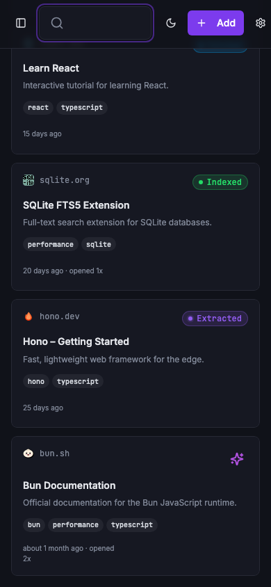
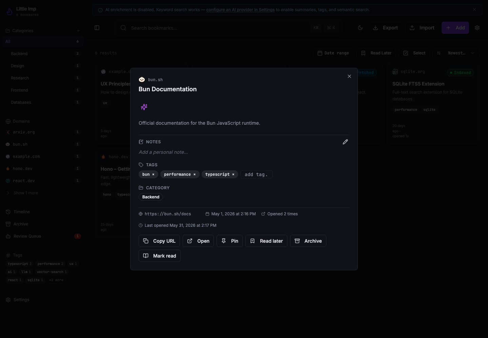

Little Imp Task Report
Bookmark Open Metrics

Before
Opening a saved URL from Little Imp was a passive browser action. The daemon did not store how often a bookmark had been opened, the API did not expose last-opened timestamps, and cards or detail views could not show usage history.
Problem
Grimoire parity and later library organization work need reliable per-bookmark usage signals. Without a shared tracked-open path, repeated opens, related links, archive/trash actions, and copy-url actions could not be distinguished.
Changes Added
- Added a SQLite migration for
opened_countandlast_opened_at, plus repository support for atomic open recording. - Added
POST /bookmarks/:id/openand regenerated the API contract and generated API docs. - Included metrics in bookmark DTOs, search/detail responses, JSON export rows, and CSV export columns.
- Centralized frontend open behavior in
openBookmarkExternalso cards, detail actions, archive, trash, and related-bookmark opens share the same tracking path. - Kept copy-url actions passive and covered them with regression tests.
Result
User Flow
Every user-triggered open posts to the daemon once, updates the persisted count and timestamp, and still opens the URL even if metrics recording fails.
Visibility
Cards show compact opened counts and detail views show both total opens and the last-opened time, giving later sorting and filtering work a stable data source.
Verification
npm run lintexited 0 with the repository's existing 9 warnings.npm run type-checkpassed.npm run testpassed with 176/176 frontend and script tests.npm run test:daemonpassed with 372/372 daemon tests and 1140 assertions.npm run docs:api:checkpassed.npm run buildpassed.npm run test:e2epassed with 19/19 Playwright tests.- Visual checks used an isolated temp daemon on loopback, seeded data, desktop and mobile screenshots, and a live open-action check that incremented a bookmark from 2 to 3 opens.
Implementation Notes
The open endpoint updates by bookmark ID and returns the updated bookmark row. The frontend helper intentionally catches metrics failures after calling window.open so local tracking problems do not block the user's navigation.
Additional Screenshots


Files Changed
daemon/src/db/migrations/0012_bookmark_open_metrics.sqldaemon/src/db/bookmark-repository.tsdaemon/src/routes/bookmarks.tsdaemon/src/routes/export.tsdaemon/src/api/contract.tssrc/lib/api.tssrc/lib/bookmark-open.tssrc/hooks/use-bookmarks.tssrc/components/BookmarkCard.tsxsrc/components/BookmarkDetailContent.tsxsrc/pages/Archive.tsxsrc/pages/Trash.tsxdocs/api-contract.jsonAPI.md